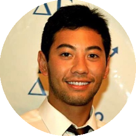

|
I am an Alfred E. Mann Doctoral Fellow at the Translational Imaging Center at the University of Southern California (USC), working with Scott E. Fraser and Thai V. Truong in biophysics and optics. I received a BS from Loyola Marymount University in 2012, worked as an engineer at Unbound Consulting from 2012-14, and earned a MS from USC in 2015. email / Twitter / Google Scholar / GitHub |
 |
|
I'm interested in optics, laser physics, and biophysics. Much of my research centers on developing novel optical tools and lately I've been building light microscopes for noninvasive four-dimensional imaging of biological phenomena at higher resolution and greater depths than previously possible. A physicist at heart, these new technologies are aimed at a quantitative understanding of essential biological functions. understanding general physical principles that govern biological function. |
 
|
TV Truong, DB Holland, S Madaan, A Andreev, JV Troll, DES Koo, K Keomanee-Dizon, M McFall-Ngai, SE Fraser bioRxiv We present selective volume illumination microscopy (SVIM), combining the high synchronous volumetric acquisition rates (up to 100 Hz) of light-field microscopy and the high contrast associated with light-sheet microscopy. |

|
A Calrsson, P Kuhn, M Luttgen, K Keomanee-Dizon, P Troncoso, P Corn, A Kolatkar, JB Hicks, CJ Logothetis, AJ Zurita Clinical Cancer Research 23.7, 1722-1732 (2017) Nature Reviews Urology Research Highlight We characteize tumor cells in the fluid phase of blood and bone metastases, and reveal new insights into their biophysical properties and clinical significance. |

|
H Zhan, R Stanciauskas, C Stigloher, K Keomanee-Dizon, M Jospin, JL Bessereau, F Pinaud Nature Communications 5, 4974 (2014) Nature Method's Methods in Brief / Biophotonics Research Highlight We use a new super-resolution fluorescence microscopy method to localize indivdual molecules and track their Brownian diffusion with a precision of 30 nm, directly in live animals. |
| |